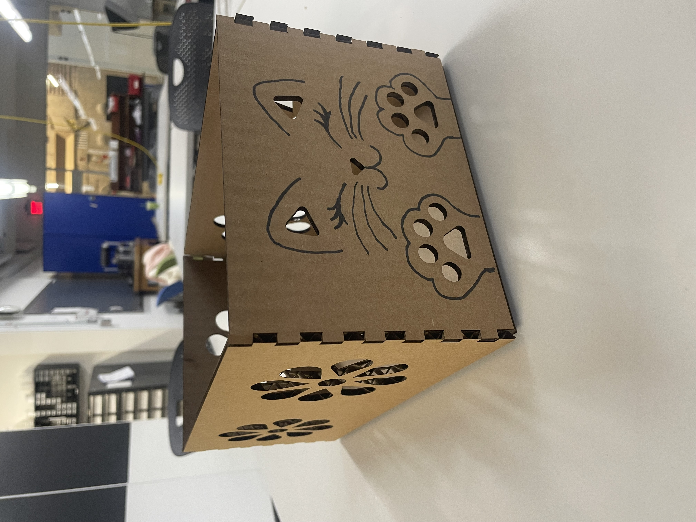
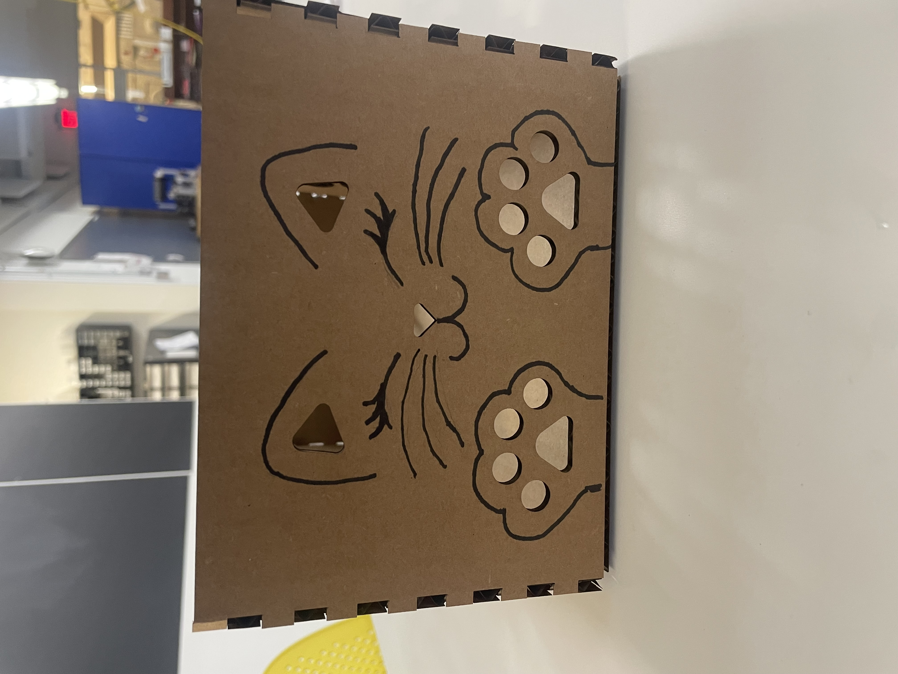
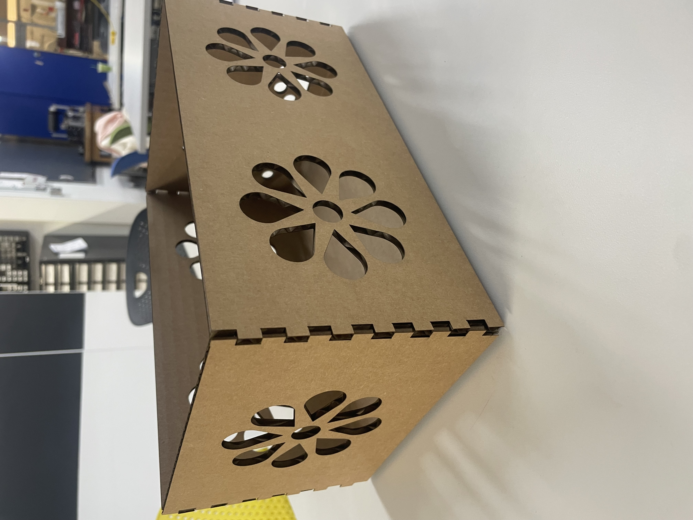
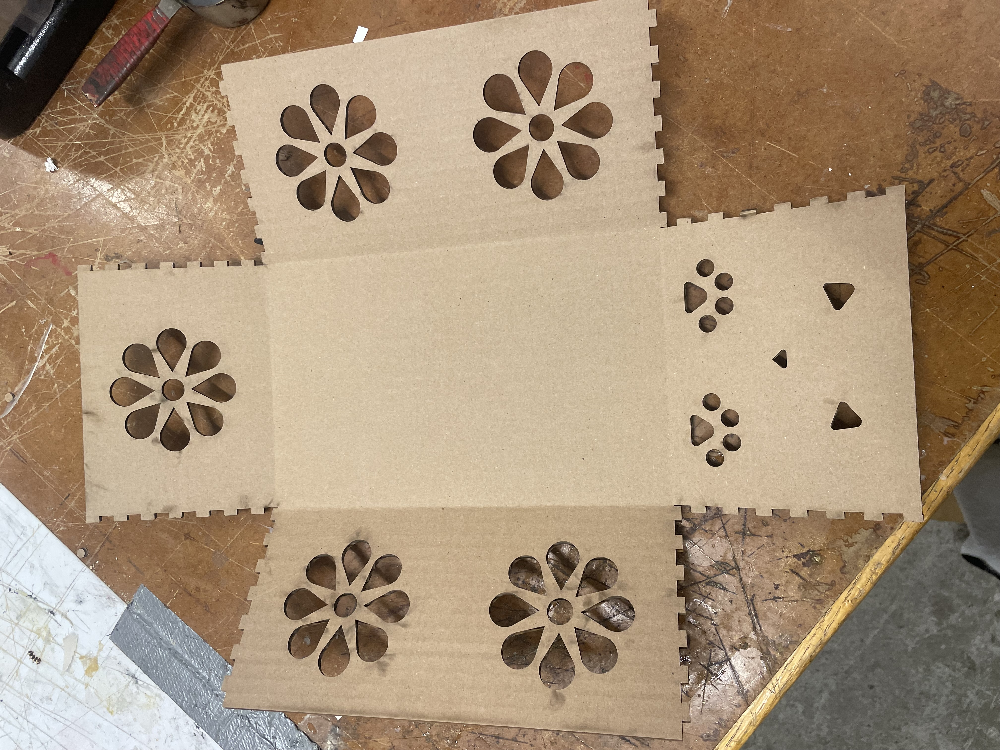
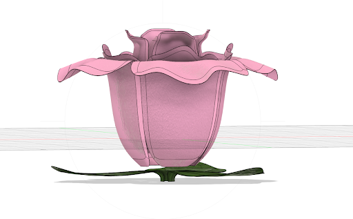

<div class="textcontainer">
<p class="margin"> </p>
<h3>Week 2: 2D Design & Cutting</h3>
<p class="margin"></p>
<div class="flexrow">
<a id="btn" href="https://a360.co/4bOVa4n" target="_blank" rel="noopener noreferrer">
View Fusion 360 Model
</a>
</div>
<p class="margin"></p>
<h4>Assignment 1: Make a Box</h4>
<p>
For this first assignment, I 2D-modeled our finger-joint box. The tutorials made it easy to follow the steps. At first, I designed the flowers, and I learned a lot by doing and experimenting. Whenever I was uncertain, I would go back and look more closely at the tutorials.
</p>

<p>
After modeling the box. I created the cat face in Fusion 360. I then realized that the design was inverted, because that part of the box would eventually face upward. As a result, I had to switch the direction of that design again.
</p>

<p>
I created a flower design, but it did not look very uniform at first. Because of that, I made use of different tools, including the mirroring options, and I carefully calculated the right angles and sizes so that all the flowers would look nice and uniform.
</p>

<p>
Before printing, I noticed that I had not added kerf to the design. Because I had already mirrored the finger joints, I had to delete them and start again, since I had not included a kerf adjustment in the equation for the finger joints. Ultimately, I realized that I initially had too few fingers, so I increased the number. However, this deformed the box, and I had to start over once again. The process took several attempts, but I noticed that the more often I repeated it, the faster and easier it became.
</p>

<p>
It was also a very fun process to see the laser cutting in action and to watch the box come together. I chose a cut-out design with flowers and a cat so that you can slightly see into the box, but not too much. This way, the box remains stable while also looking nice when light shines through the cut-outs.
</p>
<hr>
<h4>Assignment 2: Fusion 360 Tutorial</h4>
<p>
For assignment number two, I followed the Fusion 360 tutorial and learned a lot about the basics of sketching, constraints, and modeling. This was very helpful and provided a strong foundation for 3D modeling. Based on the tutorials, I also experimented a little on my own, which was both useful and fun.
</p>
<hr>
<h4>Assignment 3: Fusion Modeling</h4>
<p>
Note: At the top of this page you can find a link to the 3D model I built for this assignment.
For this assignment, I used the knowledge I had gained from the tutorials and experimented extensively with different features. I chose a design that is not very flat and does not follow a very specific or realistic flower shape, such as a rose.
The flower consists of 23 individual components. I started by sketching the basic lines of the petals and the leaves and then used the Revolve and Extrude functions to build the initial structure. Before that, I modified the form extensively to create the petal shapes, and I also added color to the flower.
I had to redo parts of the process several times because Fusion 360 sometimes did not recognize certain elements as segments. Additionally, the number of different bodies and layers occasionally became confusing, which required me to work step-by-step and go back whenever necessary. However, similar to the first assignment, the more often I restarted from a certain point, the easier and faster the process became.
</p>
<img src="Flower_1.png" alt="Flower model iteration 1" width="650">
<p>
The flower that inspired my 3D model was a Lego flower decoration that I saw in a friend’s room. I measured the flower and looked at which components it consisted of. For my own design, I changed the color and wanted to make the petals look more refined, since the original petals appeared quite flat. I tried to give my version more shape and curvature.
Another reason I chose this design is that one of my ideas for the final project is a dress with flowers that can bloom. These flowers could potentially be 3D-printed using thin material and operated through a mechanism where wires are connected to each petal. When the wires are pulled, the flower would bloom and open.
</p>
<p>
Second iteration with adjusted curvature and spacing of petals.
</p>

<p>
Here, you can see the flower again, which consists of of the 23 components, 20 individual petals and three leaves. Overall, this was a very fun process. The more I experimented and worked with the tools, the faster and more intuitive everything became.
I initially started with a very flat flower design and used simple extrusion, but it did not look realistic or visually appealing. Because of that, I experimented with different functions and spent time reading documentation and watching tutorials on the various tools available in Fusion 360 until I was able to produce the 3D rose.
</p>
</div>